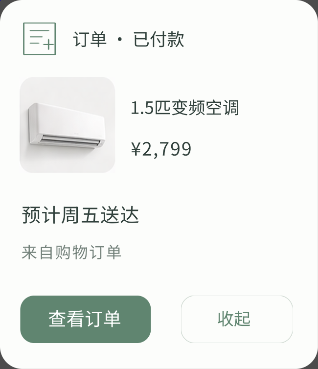
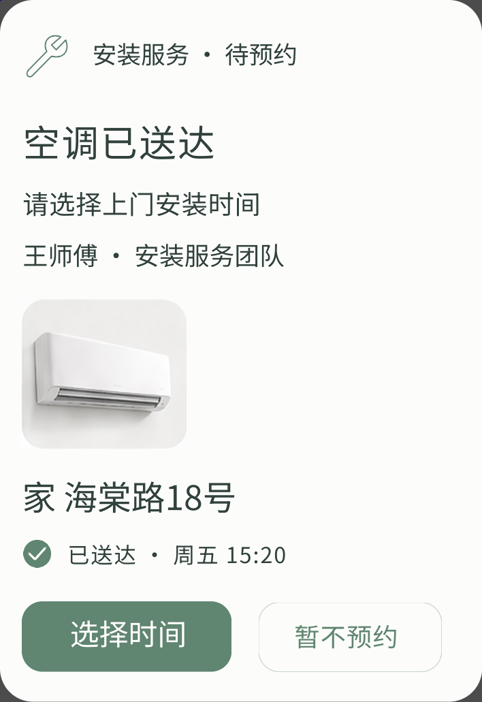
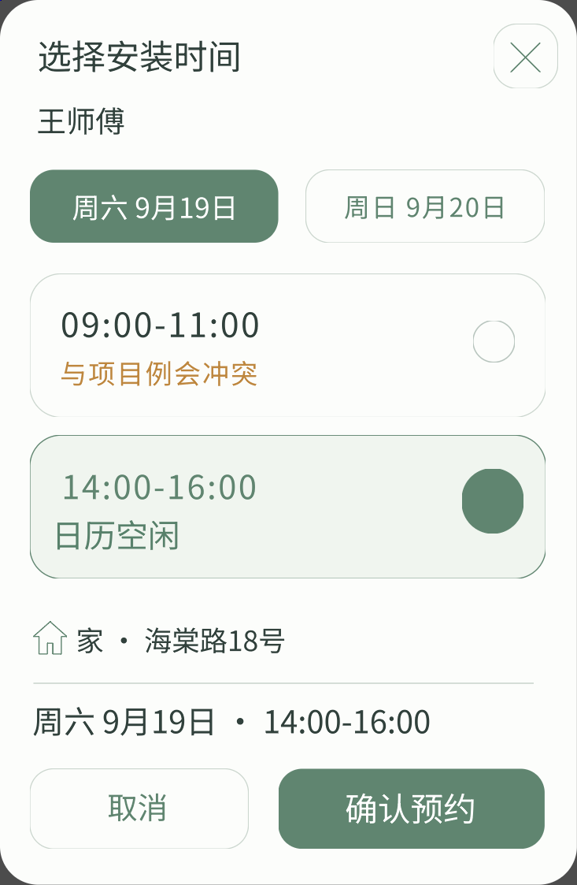
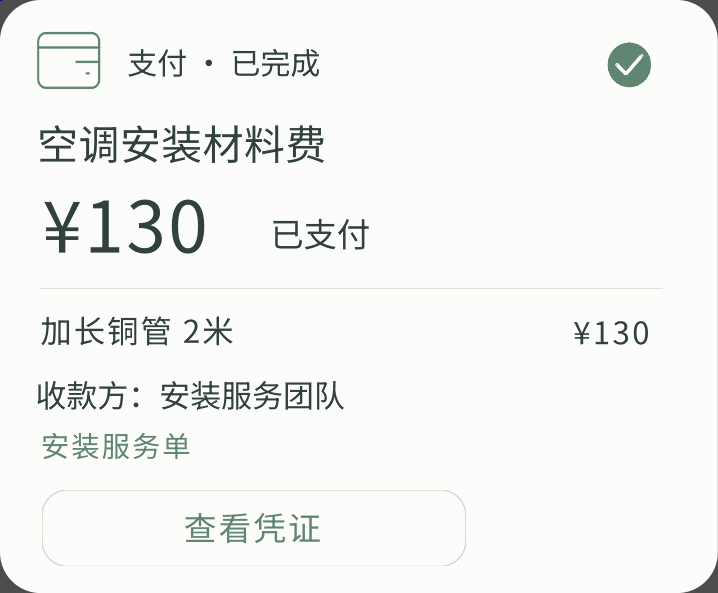

订单服务订单已付款
从桌面查看订单，或收起提醒

原生挂载与输入通过 · 324.9 × 376.9 逻辑像素
16 个原生组件 · 2 个按钮
物流服务空调正在送来
查看配送时间，联系配送员或调整时间
原生挂载与输入通过 · 364.6 × 384.2 逻辑像素
23 个原生组件 · 2 个按钮
安装服务预约上门安装
送达事件触发安装服务，用户决定何时预约

原生挂载与输入通过 · 354.1 × 515.3 逻辑像素
18 个原生组件 · 2 个按钮
安装服务日历参与选时
冲突时段不可选，确认按钮等待有效选择
原生挂载与输入通过 · 363.9 × 561.3 逻辑像素
35 个原生组件 · 6 个按钮
安装服务确认可用时段
选中下午时段，再确认预约

原生挂载与输入通过 · 366.4 × 561.3 逻辑像素
39 个原生组件 · 7 个按钮
安装服务安装预约成功
服务保留预约，支持改约或明确取消
原生挂载与输入通过 · 364.0 × 229.0 逻辑像素
15 个原生组件 · 2 个按钮
日历服务日历已经更新
确认表示已阅，撤销只移除这条日程
原生挂载与输入通过 · 364.0 × 215.7 逻辑像素
14 个原生组件 · 2 个按钮
安装服务预约仍然有效
撤销日历后，安装服务保留原预约
原生挂载与输入通过 · 363.5 × 260.0 逻辑像素
15 个原生组件 · 2 个按钮
日历服务重新加入日历
用原来的事件身份恢复安装日程
原生挂载与输入通过 · 364.3 × 196.1 逻辑像素
8 个原生组件 · 1 个按钮
安装服务师傅正在路上
查看预计到达时间和预约，直接联系师傅
原生挂载与输入通过 · 372.0 × 491.1 逻辑像素
24 个原生组件 · 2 个按钮
支付服务材料费待确认
付款由用户确认，撤销仅关闭待付款请求
原生挂载与输入通过 · 357.0 × 356.9 逻辑像素
21 个原生组件 · 3 个按钮
安装服务安装已经完成
服务卡片保留状态，提供问题反馈入口
原生挂载与输入通过 · 357.0 × 171.1 逻辑像素
8 个原生组件 · 1 个按钮
支付服务付款完成
保留金额与回执入口，重复点击不重复付款

原生挂载与输入通过 · 358.9 × 296.5 逻辑像素
19 个原生组件 · 2 个按钮
安装服务查看服务记录
付款之后，安装服务仍有独立入口
原生挂载与输入通过 · 359.5 × 141.3 逻辑像素
8 个原生组件 · 1 个按钮